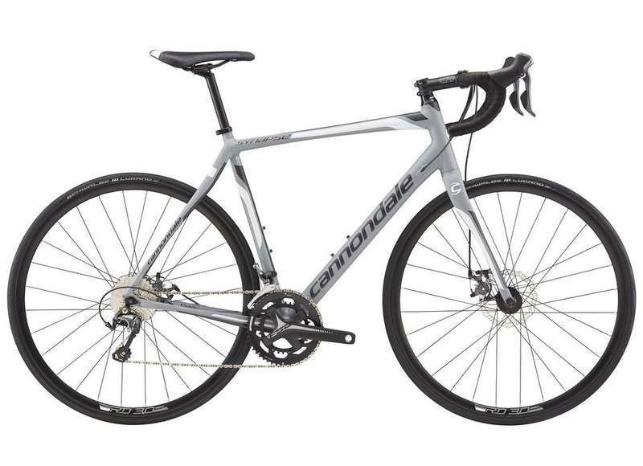
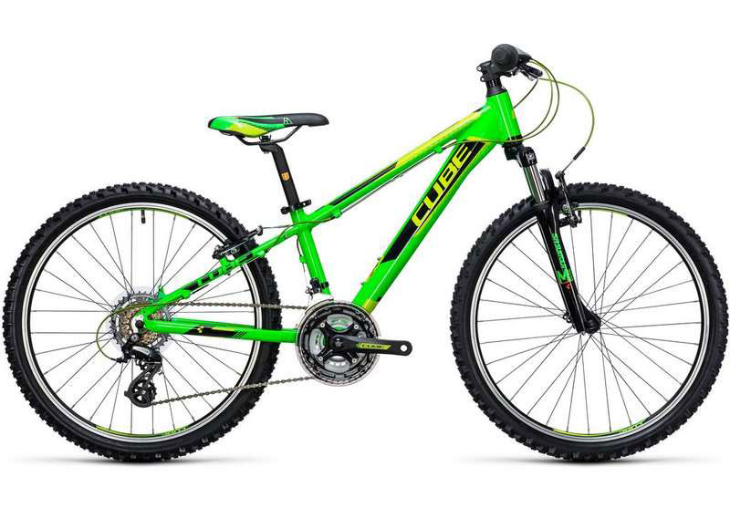

Bike King Borders
Adult bike Tiagra Bike - £550.00
Whether it is your first road bike, or a winter training bike, the Tiagra will keep you in the saddle with its great mix of comfort through its endurance race geometry, versatility with its all-weather stopping power disc brakes and the great value but high performing Tiagra drivetrain.
Features:
- 6069 an 6061 Aluminium frame
- Lifetime frame and fork warranty
- Lightweight FSA cranks
- Save plus micro suspension
- Weight: 12.8kg
Adult bike Attain Bike - £599.00
The Attain provides exceptional comfort in the saddle due to its perfectly dialled geometry, lightweight performance from its advanced aluminium frame and incredible braking performance with the new disc brake system. Due to powerful and reliable brakes, you can calmly brake later for corners and therefore increasing average speed on your favourite circuit.
It also adds a reassuring dose of all-weather reliability for race or training rides, allowing you to concentrate on your performance without worrying about wet roads.
Features:
- Aluminium Frame
- Integrated cable routing
- Press fit BB
- Tapered Head Tube
- Through Axle wheels
- Fender option
- Weight: 9.8kg
Adult bike Superfly Mountain Bike - £299.00
The Superfly continues to this day to be a market leader. With it's super light weight aluminium frame, this bike was made for speed and zips through the trails in lightening times. The Superfly is the best of the best for cross country speed and efficient rides.
Features:
- Hydro formed super light frame
- Race geometry for lower position and shortened chainstays
- Frame butted at multiple point for strength
- Custom offset fork for precise steering at low speed
- Hardtail mountain bike
- Weight: 11.2kg
Adult bike Womens Ridgeway Bike - £425.00
The Ridgeway bike is ready for an adventure whenever you are! Lightweight, hydraulic disc brakes, comfort enhancing suspension fork, comfortable women's specific, all features will give you a top performing bike for many years to come.
The Step-thru frame has all the same design features as the unisex version but with the added benefit of a partially dropped top tube. This increases stand over height, while still keeping enough room inside the frame to comfortably fit a water bottle. Another benefit of the partially dropped tube is the maintained stiffness of the frame. The tyres are puncture resistant which means they are more reliable and therefore gives you piece of mind.
Features:
- Front Hub: Alloy, cup and cone, double seal, 32 hole
- Chain: KMC CN-HG-53 9 speed
- Saddle: Whyte custom women's fit, triple panel design
- Handlebar: High rise 30mm, 31.8mm, 620mm wide
- Weight: 13.5kg
Kids bike Kid 240 - £160.00
Halfway between a kid's bike and a mountain bike for adults, the Kid 240 has all the features of a full-sized bike - which makes it the ideal choice for growing riders who want to keep up with their friends and parents.
With a suspension fork, powerful v-brakes, 21 gears, a high quality aluminium frame and geometry optimised for youngsters, there's nothing standing in the way of an off-road adventure.
Features:
- Lightweight aluminium frame
- 24" Wheels- Ideal for Kids 130-160cm in height.
- 7 speed triple transmission
- Weight: 12.25kg
Kids bike Superfly - £179.00
The Superfly is a race-ready mountain bike inspired by their super-fast adult Superfly. Quality trail components mean business, while the light, nimble frame keeps things fun. It features a race-tuned frame, inspired by their super-fast adult Superfly. Frame, components and riding position that are singletrack ready. Fits right from the start, and will grow with the rider and Trek quality which equals safety on the trail. It features the following upgrades from a standard department store bike: The best materials and manufacturing; Professional assembly; Designed, crafted, and sold by people who care about bikes and their riders.
Features:
- Alloy linear-pull brakes, Dialed alloy levers
- Frame - 24" Dialed frame size, Alpha Gold aluminium
- Drivetrain - Shimano Tourney, 21-speed twist
- Weight: 11.56kg